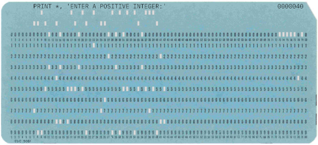

Thank you for visiting this page. The authors of this page do not collect, store or use
any data about you, nor any other data for that matter. However, this site is hosted on
github.io, and since there is no such thing as a free lunch, this has some unsuspected quircks
concerning data gathering and use by the hosting company. The authors of this page are not
responsible for the data gathering and use by the hosting company.
Publications
Robin Pynckels & Filip Pynckels
Security
Mitre CVE database shutdown
The Impending Darkness: When Cybersecurity's Golden Record Faces Extinction
(click here to see the document)
April 16, 2025
The Heartbeat of Vulnerability Tracking: Understanding Mitre and CVE
Mitre Corporation stands as a beacon of technological innovation and national security research.
Established in 1958, this not-for-profit organization has been instrumental in managing critical
cybersecurity infrastructure, most notably the Common Vulnerabilities and Exposures (CVE)
program. The CVE database serves as the global dictionary of known security vulnerabilities,
providing a standardized identifier for every publicly disclosed cybersecurity weakness.
For decades, Mitre has meticulously cataloged and maintained this comprehensive repository,
enabling security professionals worldwide to track, understand, and mitigate potential digital
threats. Their systematic approach has been fundamental in creating a shared language for
cybersecurity researchers, vendors, and organizations.
The Looming Crisis: Funding Withdrawal and Potential Collapse
Recent developments have sent shockwaves through the cybersecurity community. The U.S. Department
of Homeland Security (DHS) has signaled the end of the contract that is funding the CVE program,
potentially leaving a massive void in global vulnerability tracking. This unexpected move
threatens to disrupt the intricate ecosystem of cybersecurity research and threat management.
The implications are profound. Without a centralized, trusted repository, organizations might
struggle to quickly identify and respond to emerging security vulnerabilities. The potential
shutdown could create significant information fragmentation and increase cybersecurity risks
for governments, corporations, and individual users.
Global Alternatives: Preserving the CVE Legacy
European Intervention: A Continental Cybersecurity Response
In the rapidly evolving landscape of global cybersecurity, Europe stands at a critical juncture.
The potential shutdown of the MITRE CVE program has sparked intense discussions about the future
of vulnerability tracking and digital defense. European nations are uniquely positioned to step
forward and assume a pivotal role in maintaining the global cybersecurity ecosystem. The question
arises if the European decision-making process is fast enough to take advantage of this
opportunity.
Academic Institutions: Guardians of Digital Knowledge
Prestigious research universities in democratic nations present another promising alternative.
Institutions in Canada, Australia, and various European countries have demonstrated exceptional
capabilities in cybersecurity research and management.
Universities like ETH Zurich, University of Toronto, and UNSW Sydney possess the technological
expertise, research infrastructure, and international credibility required to potentially inherit
and expand the CVE program's mission.
Potential Challenges in Transition
Transitioning the CVE program will not be without significant challenges. Maintaining the database's
comprehensiveness, ensuring global participation, and preserving the established credibility will
require substantial resources and international cooperation.
Technical complexities include maintaining consistent vulnerability identification standards,
ensuring real-time updates, and creating a sustainable funding model. Moreover, geopolitical
considerations could complicate the transfer of such a sensitive cybersecurity resource.
The Human Element: Community and Collaboration
Beyond institutional mechanisms, the cybersecurity community itself represents a powerful force
for continuity. Open-source initiatives, collaborative research platforms, and international
cybersecurity conferences could play crucial roles in maintaining vulnerability tracking momentum.
Professional networks and independent researchers might develop decentralized solutions, potentially
creating a more robust, community-driven approach to vulnerability management. In each case, it has
become clear that counting on a single solution payed by a single country is obsolete.
Hope on the Horizon: Adaptive Resilience
Despite the current uncertainty, the cybersecurity community has consistently demonstrated remarkable
adaptability. Historical precedents show that critical infrastructure rarely disappears entirely but
often transforms through innovative solutions.
Whether through governmental intervention, academic leadership, or community-driven initiatives, the
fundamental need for comprehensive vulnerability tracking ensures that some form of the CVE program
will likely emerge, potentially stronger and more dynamic than its predecessor. The actual problem is
an opportunity for other organisations or countries to shine.
Webcam security
(click here to see the document)
Januari 16, 2025
This document, circulated for the MegaGiga Computerclub presentation, focuses on webcam security
and delves into the fundamental mechanisms of webcams, outlining their role in capturing and
transmitting video or images to local networks or over the internet.
The document sheds light on the hardware and software aspects of webcams, emphasizing the
significance of understanding protocols such as RTSP, PSIA, and ONVIF commonly employed for audio
and video streaming.
Furthermore, the document delves into the external and internal characteristics of webcams,
highlighting the connection methods and protocols used for interaction with webcams.
It underscores the significance of recognizing these elements for a comprehensive understanding of
webcam functionality. The discussion extends to ways of identifying webcams on the internet,
including the use of Google dorking and platforms like Shodan.io for detailed searches of specific
devices.
Malware analysis - talrezew
(click here to see the document)
October 29, 2024
The link http://frthi.trophytakers.comis/... transmitted to an unsuspecting victim via a mail.
When the victim clicks the link a seemingly legitimate webpage is shown, and the browser history
is changed. If the user revisits the page, the browser is redirected to a 'You won a price' page.
But this is not the end of the story. From the mentioned page, the user is redirected to a
website in the Netherlands (Amsterdam) that loads a malicious webpage.
This document makes an analysis of the malware and of the supporting server that should be
sufficiently profound to know what the malware does, how to prevent the malware on your
infrastructure.
Application security - A forgotten programming skill
(click here to see the document)
August 23, 2022
At the beginning of 2022, it was, and still is, common understanding that api security
is a hot item. There is, however, an intersection between api security and other security
domains that is often not taken into account. Where API security is often focused on
knowledge of network protocols and fuzzing of interfaces, a deeper danger lurks below the
surface. A danger that is almost as old as information technology itself, and still very
much disregarded. Disregarded during education and disregarded in the field. The name of
that danger is application security.
The goal of this article is not to cover the entire field of application security, but to
give one of the most basic and yet most striking examples of an application security glitch
that is used all over the place to teach the C programming language.
Malware analysis - TB7mT95P
(click here to see the document)
Juli 24, 2022
 The link https://phot0.tr5se.com/TB7mT95P is transmitted to an unsuspecting victim by means
of messenger, together with a little text in the sense of 'look what I found'.
The link https://phot0.tr5se.com/TB7mT95P is transmitted to an unsuspecting victim by means
of messenger, together with a little text in the sense of 'look what I found'.
When the victim clicks the link...
This document makes an analysis of the malware and of the supporting server that should be
sufficiently profound to know what the malware does, how to prevent the malware on your
infrastructure, and eventually even how to hack the supporting server to shut it down.
We do not recommend the latter for the reason that even hacking a hacker can be illegal in
your country.
Microsoft can secretly update Raspberry OS
(click here to see the document)
Feb 6, 2021
To the surprise of a number of administrators of Raspberry OS (before called Raspbian),
the latest update came with an extra software key that permits Microsoft to make
changes to the Raspberry OS each time the user or administrator does an update
It goes without saying that this did not fall well with the Raspberry and Linux communities
who have lost their trust in Raspberry and see this case as a confirmation that Microsoft has an
uncontrollable urge to be present on each computer and gather user data, even if it
has to be done secretly.
From my side, I rather think that it's not artificial intelligence but natural stupidity that
will destroy the world. With other words: it's not even sure that Microsoft is aware of
the fact that their software is added to Raspbian OS, nor that the Raspberry Pi Foundation
was aware of the consequences of their decision to put VScode in Raspberry OS LITE.
WarDog, the new war driving in miniature
(click here to see the document)
Aug 1, 2019
The expression wardriving is a generally known concept. It means loading your car with the
necessary equipment (such as there are one or more notebooks, a couple of antenna’s, a good
GPS device, etc.), driving to a place that is (estimated to be) close enough to one or more
wireless antenna’s, and starting to scan the wireless antenna’s and networks that belong to
them.
This paper is written to show that it is not necessary to be an electronics genius to create
a device that is so small that it can be hidden in plain sight, and that can get organizations
in trouble.
Divided we stand, divided we fall - A security risk analysis for Belgium
(click here to see the document)
Jun 11, 2017
Starting from a geopolitical analysis of the part of the world that influences the Belgian security
situation, this paper focuses deeper on one example of risk that can have major influences on
the countries of the NATO and the European Union.
Using this risk analysis, we focus in on the Belgian situation. Especially elements that make
Belgium vulnerable in the next decade are studied.
The author wishes to stress again that special care has been taken not to use any material that
is classified within NATO, EU or BE context. All information that is used to make this analysis
is freely available for anyone who wants to take the time to look for it, read it and assimilate it.
How to hack the identity of a Tor user
(click here to see the document)
Jan 17, 2016
Absolute anonymity is an illusion. This publication shows, on a high level, how even Tor users (or
users of other anonymizing networks) can be identified by means of fingerprinting, the use of a
honeypot, etc.
After a general introduction and a closer look at the Tor network, the steps to find the identity
of a Tor user is explained.
Note that this publication does not give the details of the stated techniques in order not to pass
the legal boundary.
Free Software
Tiny Linux
(click here to see the project repository)
April 05, 2025
The Tiny Linux project is aimed at crafting an exceptionally small and efficient Linux
distribution, primarily targeting users who need minimal resource consumption without
sacrificing core functionalities. This project emphasizes compactness and speed, making it
ideal for embedded systems or devices where conserving computational resources is crucial.
Despite its reduced size, Tiny Linux strives to maintain a level of usability that supports
essential networking and troubleshooting tasks, allowing it to serve effectively in roles
such as microservers or educational tools for understanding Linux internals.
The project is accessible for anyone to use and modify, and encourages contributions through
its GitHub repository. The open-source nature ensures that users can tailor the distribution
to specific requirements, further enhancing its utility in specialized scenarios. The
simplicity of the distribution aligns with the philosophy of empowering developers and enthusiasts
to maximize performance while minimizing footprint, ensuring that it remains a versatile and
valuable asset in diverse technological applications.
GNU-Linux
(click here to see the project repository)
April 05, 2025
The GNU-Linux project is focused on the creation of a minimal GNU/Linux disk image. This
image is designed for use with QEMU to facilitate testing applications written for GNU/Linux
environments. It stands out for its streamlined architecture, aiming to serve developers
and hobbyists looking for a low-overhead platform to test their applications. However, it
is essential to note that this image is not intended for production environments, as it
lacks essential security features found in more robust distributions.
The project is accessible to anyone interested, and it provides a straightforward setup
process. Users can get started by cloning the repository from GitHub and following the
makefile instructions to build the image. While it does not support advanced features like
code forks or security monitoring, its simplicity and ease of use make it a great tool for
educational purposes and for developers focusing on application testing. Additionally,
credits are given to Maple-Circuit for inspiring the project's procedure, further promoting
collaboration and learning within the tech community.
Why free software ?
(click here to see the document)
July 28, 2020
 Thomas Watson, the president of IBM from 1914 to 1956, said he thought there was a world
market "for maybe five computers". Most people today critcise this idea as being one of
the worst visions ever. But was it? The question is rather: what is a computer? If we
define it as a single machine, then Watson's vision was a little flawed. If, however,
we define a computer as a collective of computing power, then maybe Watson was not
all that far from the thruth.
Thomas Watson, the president of IBM from 1914 to 1956, said he thought there was a world
market "for maybe five computers". Most people today critcise this idea as being one of
the worst visions ever. But was it? The question is rather: what is a computer? If we
define it as a single machine, then Watson's vision was a little flawed. If, however,
we define a computer as a collective of computing power, then maybe Watson was not
all that far from the thruth.
If we look at the computing power collectives, also called clouds, we see a limited number
of major players killing (they call it: taking over and integrating, Startrek called it:
assimilating) all competition. And what rests are the Microsoft, Google, Amazon, ... clouds
(data centers) of this world. Maybe not five, but in each case very few.
So, what choice do we have, as an individual, as a company, as a government? The computing
collectives dictate that we must go to the cloud with our data (even sensitive business or
security data). In fact, they don't dictate it, they just make it virtually impossible to
keep our data protected within our perimeter. They abandon software that runs in our perimeter.
And the software that still runs within our perimeter contacts their infrastructure several
times per use we make of it. And, of course, purely with as goal to make their software better,
they transfer all kinds of information from our machines to their datacentra.
All of this has as a consequence that only the economies of a few countries are fed with
vast amounts of money, whereas most countries (that do not have one of the major players
headquarters on their territory) don't even have a chance to grow a local technology
economy, despite their vast quantity of very knowledgeable citizens. And the more data the
companies get about us, the more they can use that data to get even more money coming their
way.
 Besides the economic point, there is also the privacy and security point. It is well known
that some proprietary software provides access to our machines and our data for certain
security agencies. It is well known that some proprietary protocols are designed in a way
that there are backdoors to eavesdrop. Sometimes to get an economic advantage, sometimes
to get a world dominance advantage, sometimes to suppress a part of the population, ...
And still the international community stays mute in most cases. Even governments put their
data in the major clouds. Intentional or sheer stupidity?
Besides the economic point, there is also the privacy and security point. It is well known
that some proprietary software provides access to our machines and our data for certain
security agencies. It is well known that some proprietary protocols are designed in a way
that there are backdoors to eavesdrop. Sometimes to get an economic advantage, sometimes
to get a world dominance advantage, sometimes to suppress a part of the population, ...
And still the international community stays mute in most cases. Even governments put their
data in the major clouds. Intentional or sheer stupidity?
Permit me, in this context, to refer to my publication: "Divided we
stand, divided we fall A security risk analysis for Belgium for the next decade" that
can be found in the chapter "Security" below.
I believe in stimulating the local economies around the globe by using the economic
model of free software with local support. I also believe that free open source software and
hardware can be more secure due to more people looking at and contributing to the sources.
I believe that all people should get the chance to make a living in the technology branch
(call it 'the new economy') and not only the happy few that have the luck to be born at the
right place and to work for the right companies. The more people work in technology, the more
evolution we will know, and the better the world will be for all of us (and not only for
the happy few.
Alternatives for the Linux kernel unexported kallsyms symbols
(click here to see the document)
July 14, 2020
On april 7th, 2020 Mr Deacon authored and Mr. Torvalds committed a pull request on the Linux
kernel. More specific, from kernel 5.7.7 on, some kallsyms symbols/functions will no longer
be exported by the kernel. This has as a consequence that a major number of third party
modules will no longer install after an update to the latest kernel version.
This paper looks into the problem, proposes a number of alternatives, and show how these
alternatives can be implemented without causing havoc in the source code of the mentioned
modules (read: relatively easy to change once one knows how).
Retro
1442 punch card reader
(click here to see the project repository)
March 04, 2025

The rdr1442 project is designed to read punched card images from PDF files created by pun1442,
offering a modern solution to interpreting retro-style data. Its primary functions is to extract
the textual content represented by the punched holes on the cards. The project's GitHub repository
provides detailed information on how to use rdr1442 effectively for data extraction and interpretation
purposes.
The README.md file for rdr1442 outlines the project's functionality, instructions for setup, and
examples of its usage. Users can follow the guide to install rdr1442 and leverage its capabilities
for reading punched card images from PDF files. Users interested in exploring the world of retro
computing and data interpretation can refer to the README file to get started with rdr1442 and unlock
its potential for analyzing and working with punched card images in a contemporary context.
1442 punch card puncher
(click here to see the project repository)
March 02, 2025
The pun1442 project aims to simulate punching a text file into a PDF format with an IBM 1442 retro
style look. This process generates punched cards in the resulting PDF file, which can be read back
with the rdr1442 project. Examples of outputs from pun1442 can be viewed in the tests directory.
Details on how these examples were created can be found in the runtests.sh file within the project
repository. The project is still in progress, and feedback is welcome for further improvements.
For those interested in installing pun1442, the process is straightforward, especially on Linux.
By cloning the project from the provided GitHub repository and installing the necessary requirements,
users can access the tool easily. The instructions for installation using commands like git clone
and pip install are readily available for Linux users. For Mac and Windows installations,
collaboration or assistance can be arranged by contacting the project owner directly to tailor
the setup accordingly.
The project acknowledges the use of the IBMPlexMono-Regular font and Control Data Corporation 5081
punched card collection. Licensing information ensures that pun1442 is free software distributed
under the GNU General Public License.
1403 printer
(click here to see the project repository)
Februari 10, 2025
For all the mainframe enthousiast with 'retro sentiments' we have created a little Python project.
The GitHub repository "prt1403" provides a program that allows users to print a text file to a PDF
in a retro IBM 1403 printer style.
The tool can be installed on Linux, with instructions provided for setup via git and pip. It
supports multiple font options, including two default fonts, FONTMONO and FONT1403, which resemble
the original IBM 1403 character set.
Users can adjust the print style using command-line options for color, font, paper size, and more.
The repository includes a detailed README.md file with installation steps, usage instructions,
and configuration options for customization.
Electronics playground
A hardware random number generator USB stick
(click here to see the document)
Feb 20, 2021
Since some time, the Direction ICT of the Belgian Ministry of Home Affairs is looking
into crypto systems. Within that framework, a preliminary
study[1]
has been made. With this study as a basis, priorities were decided upon, and a first
project outline was made. The first priority was the development of a hardware random
number generator. Since budgets and staff are limited, outsourcing nor insourcing this
project were an option, so the authors decided to invest some time in this project.
The document is a work in progress and must be read as such, but we got a number of
questions about the state of play of this project, so we already make available
what we have.
[1] “Cryptosystems in an ever-changing world”, Freya Verbeke (under the
guidance of Prof. Marnix Van Daele, UGent, Faculty of Sciences, Department of Applied
mathematics, computer science and statistics), 8 august 2019
A hardware random number generator shield for the Visitekaarduino
(click here to see the document)
Sep 9, 2020
This project generates true random bit sequences. A quality test of the random bit
strings is performed using different open source tests, and the developed hardware
qualifies with ease.
The use of true random bit sequences in stead of pseudo random number bit strings is
useful in the domains of data encryption, mathematics, physics, engineering sciences, etc.
Visitekaarduino, an Arduino on a business card
(click here to see the document)
Feb 7, 2020
This project elaborates on the design of a fully functional Arduino on a business card.
All necessary information is given to make it possible to understand the assembling, the
programming and the functioning of this Visitekaarduino. This includes the schematics, the
PCB design, the bill of materials, some programming code, etc.
The major challenge was to create a price-competitive business card (for volumes from 250 and
more) that gets more attention than a plain vanilla one. So, the overhead cost, like shipping cost,
engineering cost, etc. can be a bit higher, as long as the price per board is low enough. The
higher the volumes, the more beneficial this Visitekaarduino becomes.
Information technology
S80 computer Ver. 2.0 - A retro Z80 with memory mapping
(click here to see the document)
Sep 21, 2019 - Update May 31st, 2020
This document is the sequel of the S80 computer Ver. 1.0/i> document. It continues where
the previous document ended: the building of the second version of the S80 computer. The
boards are smaller, the memory size extended to 2Mb by means of memory mapping.
This second version is hardware and software compatible with the first version of the S80.
The focus of this document is on the memory 2.0 board with memory mapping addressing logic.
A first test board had flaws in the design (see previous document) and the design cycle
of the second test board has been extended with VHDL software testing and breadboard testing.
Updates of this document will also handle the creation of a wire-wrapping test board as a
final test before ordering test PCB's. Further updates will handle all future steps up until
the production version will be available.
S80 computer Ver. 1.0 - A retro Z80 with stackable segments
(click here to see the document)
Aug 13, 2019 - Update Aug 17, 2019
This document explains the design, building and programming of a Z80 based computer with
retro technology. It starts from the choice of a computer architecture, continues with a
description of the different functional and architectural components that are needed to
construct a functioning computer, handles the functional schematics, the design of the
PCB's and some of the test setups.
The software development environment is explained, and the different steps in the development
of hardware test programs, a small loader BIOS and a general program written in C are
explained.
Finally, supplementary appendices will be added with descriptions of new board versions,
Internet of Things (IoT) extensions, etc.
Europe
How to achieve rational data integration on the European level
(click here to see the document)
Nov 17, 2016 - Université de Grenoble Alpes
We live in an era where data is available on a large scale, and in a plethora of different formats. The
major question that arises is no longer if we have the data, or how to find the data, but how to find
useful information within the available data and how to decide if the information we find is correct
and complete.
This is not different on the European level in the domain of freedom, security and justice. Of course,
there is always data that is not available in a database. But much worse is the fact that data is
available more than once in several databases, spread all over Europe, and in multiple formats.
How can one be sure that the data one is using are correct and complete, and that different databases
don’t store different versions (or erroneous versions) of the same data.
And what about the Member States? Are they in the possibility to get the necessary data at the right
moment in time to take the best possible decisions with regards to the domain of freedom, security
and justice. What information are they allowed to get out of the European databases, what
information can they technically get out of these databases, and what is the cost for doing so? Let’s
not forget that the European budgets are also paid for by the Member States and hence by all of us.
Neural networks
Planning the Spinning Process by Means of Neural Networks and Genetic Algorithms
(click here to see the document)
1997 - University of Maribor, DMMI congress proceedings
Planning the Spinning Process by Means of Neural Networks and Genetic Algorithms. A general overview
of the possibilities within the domain of spinning of Neural Networks with parameters that change
in time by means of Genetic Algorithms.
This text is accepted for publication in the DMMI congress proceedings, University of Maribor,
Portoroz, Slovenia
Use of Neural Nets to Simulate the Spinning Process
(click here to see the document)
1997 - Journal of the Textile Institute
The aim of the described study consists in predicting the yarn properties, given the relevant
fibre properties and the production conditions. These conditions are determined by the type of
machines and their settings. By means of a neural network, it is possible to determine the
spinnability of the fibres above, under the given production conditions.
Once the spinnability is assured, one can predict the yarn properties by means of multiple
interconnected neural networks. A method that does not oversimplify the problem is described
in this publication.
Use of Neural Nets to Simulate the Spinning Process is published in the Journal of the Textile
Institute, Vol. 88, No. 4, 1997, 440-448
Use of Neural Nets For Determining the Spinnability of Fibres
(click here to see the document)
1995 - Journal of the Textile Institute
It is very important for a spinner to be able to predict the degree of spinnability of a given
fibre quality. Certain process conditions must be considered here. This article describes how
spinnability of a given fibre quality on a rotor and ring spinning machine can be predicted with
a reliability of 95% by means of a neural network. The structure and the characteristics of the
neural net used will be considered in greater depth, and a simple method of implementation of
such a neural net will be dealt with.
Use of Neural Nets For Determining the Spinnability of Fibres is published in the Journal of the
Textile Institute, Vol. 86, No. 3, 1995, 425-437
All kinds of projects
Corona - Facial protection for hospitals and elderly homes
(click here to see the document)
March 27th - June 30th, 2020
By now, it's clear to everyone that, especially during the Corona era, the health care
workers are the real heroes of a modern society. They put their lives in danger to help Corona
(COVID-19) patients. They are in the line of fire in a war with an invisible but lethal enemy.
Since there is a major shortage of protection materials that these people need, 7 volunteers
of Richtpunt campus Zottegem (PTIZ), have taken up the initiative to produce safety masks that
can be worn on top of other face protection equipment.
My role, albeit a small one, was to help gather the means to make masks. Around 8000 masks
have been produced and distributed amongst health care workers in hospitals and elderly homes.